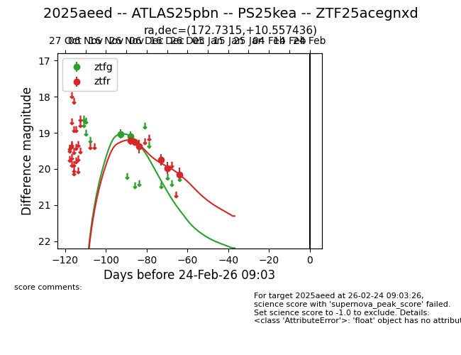
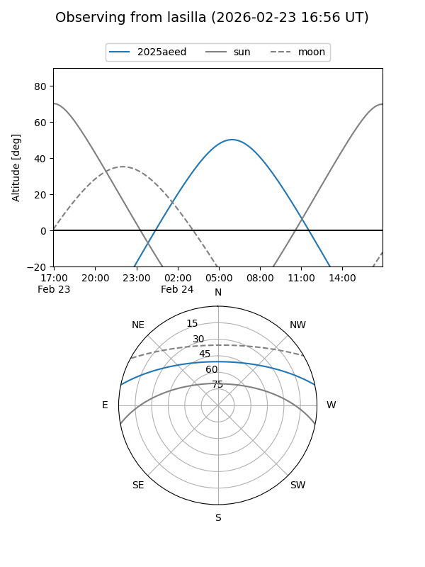
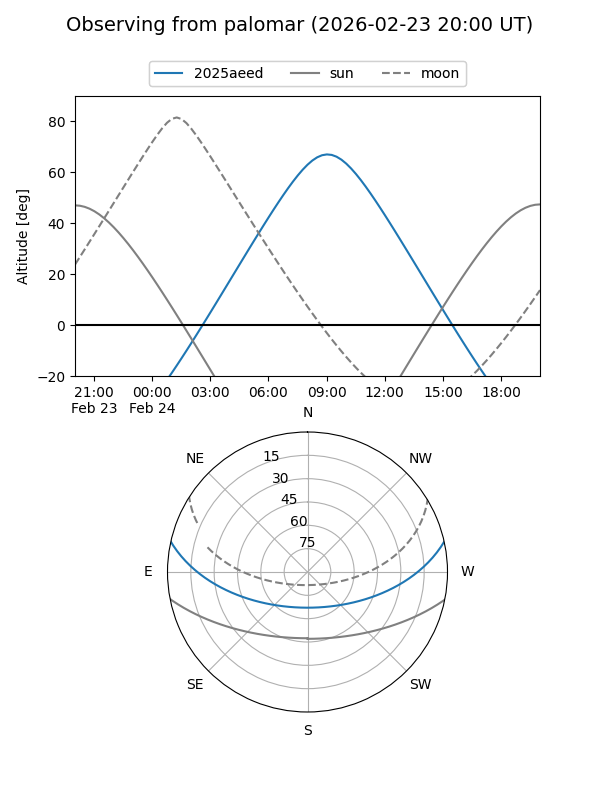
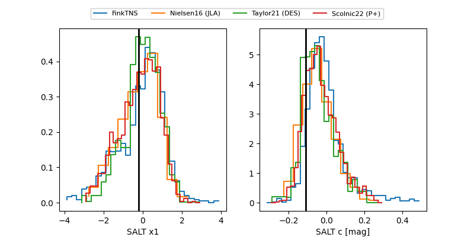

2025aeed
Target 2025aeed at 2025-12-30 17:04
Aliases and brokers:
FINK: fink-portal.org/ZTF25acegnxd
Lasair: lasair-ztf.lsst.ac.uk/objects/ZTF25acegnxd
ALeRCE: alerce.online/object/ZTF25acegnxd
TNS: wis-tns.org/object/2025aeed
YSE: ziggy.ucolick.org/yse/transient_detail/2025aeed
alt names
ZTF25acegnxd (ztf,fink_ztf)
2025aeed (tns,yse)
ATLAS25pbn (atlas)
PS25kea (panstarrs)
Coordinates:
equatorial (ra, dec) = 172.7315,+10.55744
equatorial (HMS+DMS) = 11:30:55.57,+10:33:26.77
galactic (l, b) = (250.2441,+64.82779)
Flags:
Photometry:
last ztfg=19.10, ztfr=20.15
2 ztfg, 6 ztfr detections
Lightcurve

Visibility


Additional plots
